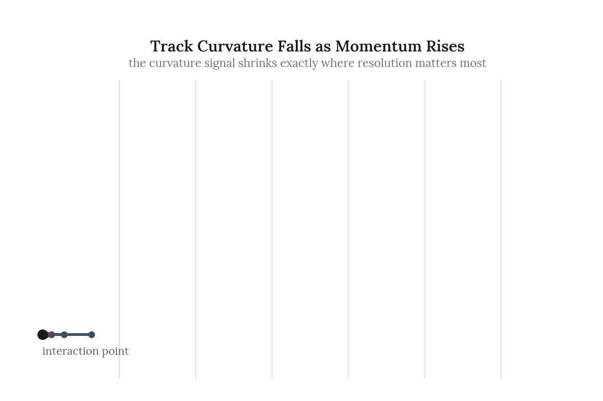
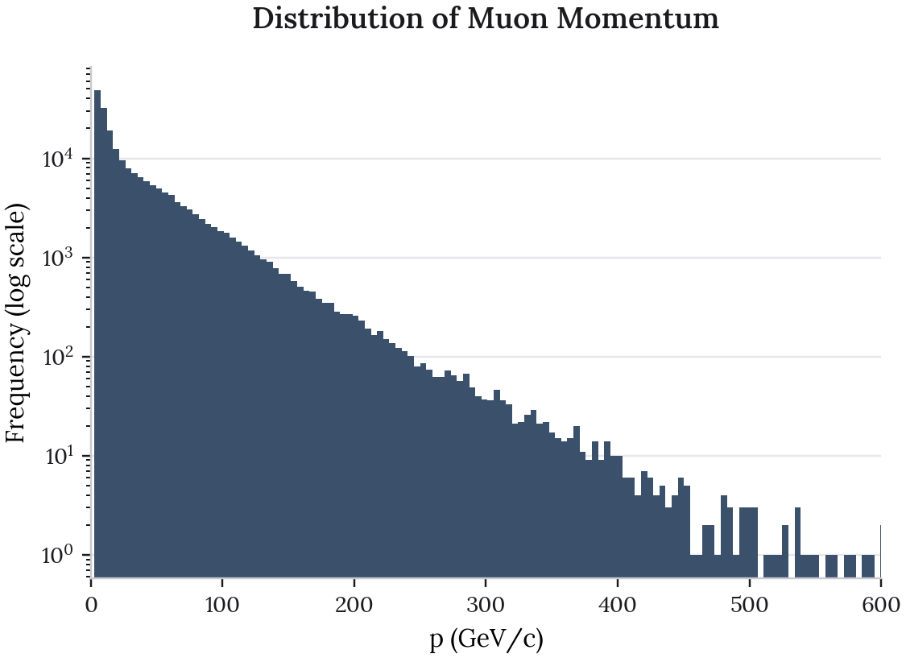
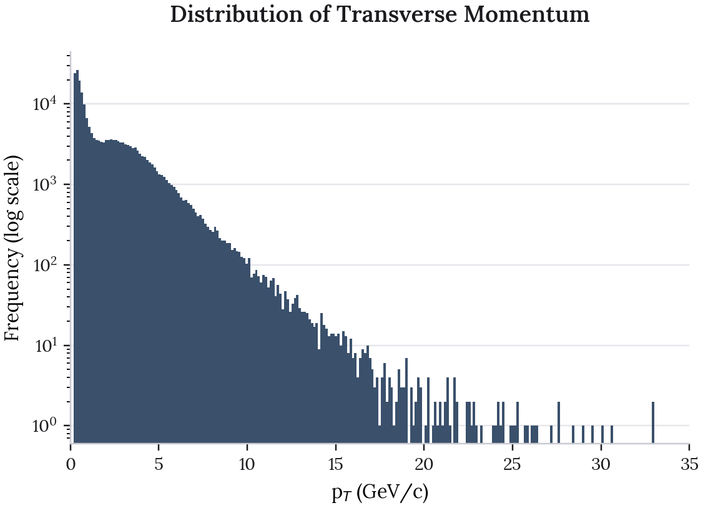
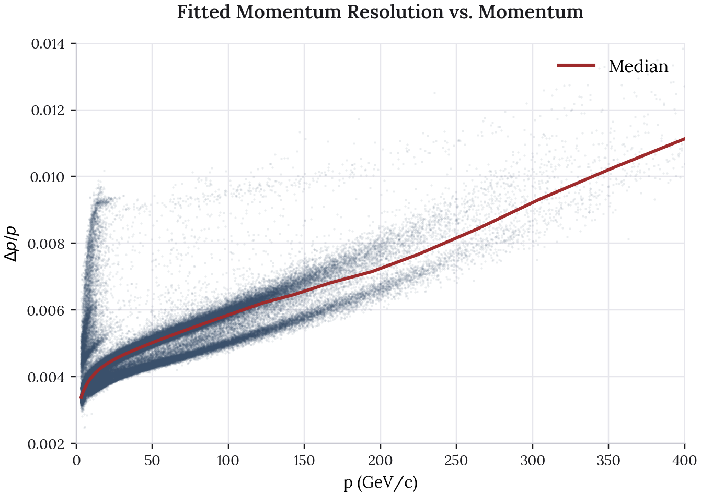
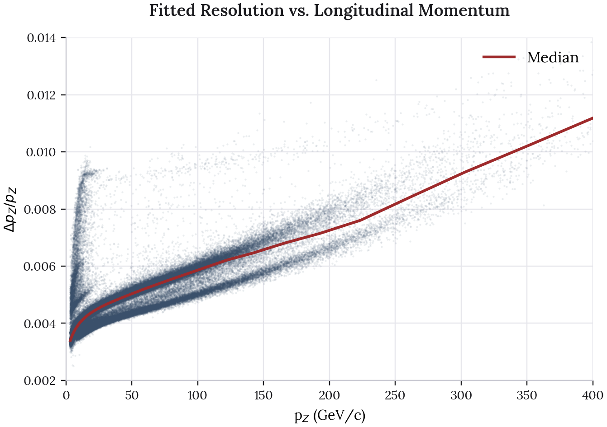
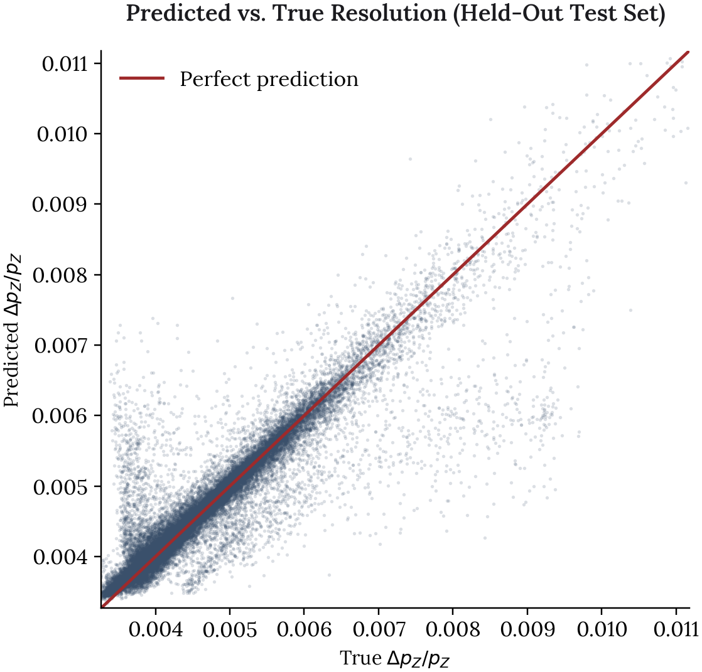
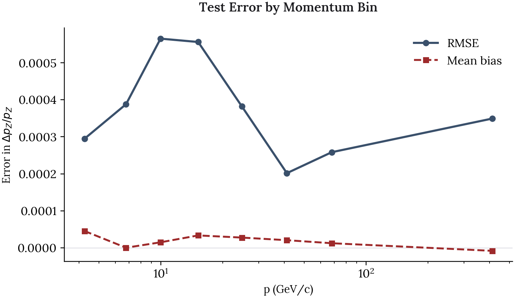

Muon Track Momentum Resolution Regression
This project predicts the track momentum resolution of muons in a particle detector from five kinematic inputs: total momentum \(p\), track slopes \(t_x\) and \(t_y\), pseudorapidity \(\eta\) and azimuthal angle \(\phi\). The muons come from simulated \(\chi_{c1} \rightarrow J/\psi\,\gamma\) decays, with \(J/\psi \rightarrow \mu^+\mu^-\), giving 208,984 reconstructed tracks.
The final model reaches an \(R^2\) of 0.854 on a held-out test set of 41,797 tracks that was scored exactly once, against 0.698 for linear regression on the same split.

The animation above is a schematic rather than measured data. It shows why the measurement is difficult: a charged track bends with a radius proportional to its momentum, so the highest momentum tracks are very nearly straight. The curvature signal that momentum is inferred from is weakest exactly where the resolution matters most.
Source code: github.com/olivia-jackson-lambert/muon-momentum-regression-model
Data Exploration
Momentum spans a wide range, with transverse momentum \(p_t\) concentrated at low values.


The longitudinal component follows from the momentum relation \(p_z = \sqrt{p^2 - p_t^2}\), which gives the target resolution ratio \(\Delta p_z / p_z\).

Resolution degrades steadily with momentum, which is the expected behaviour: faster tracks bend less, so their curvature is harder to measure. The median line makes that trend clear through the dense region.
The more interesting feature is the secondary cluster sitting well above the main band between roughly 10 and 25 GeV/c, reaching resolutions near 0.0095 where the main band is around 0.0045. A third, lower branch also separates from the main band above about 120 GeV/c. The population is not unimodal, and that matters for what the model can be expected to do.

Taking the tracks between 8 and 25 GeV/c and splitting them at a resolution of 0.0070 isolates that upper cluster. It is 1,410 tracks, or 2.1 percent of the band, and two variables separate it almost completely:
| Variable | Upper cluster | Main band | Cohen’s \(d\) |
|---|---|---|---|
| \(\eta\) | 4.48 | 3.54 | +2.21 |
| \(p_t\) | 0.288 | 1.002 | -1.31 |
| \(t_x\), \(t_y\), \(z_V\), pol, \(\phi\) | below 0.06 |
These are very forward tracks, with \(\eta\) in the 4.3 to 4.6 range against a dataset median nearer 3.5, carrying very little transverse momentum. A track travelling almost along the beam axis crosses less of the magnetic field, so its bending lever arm is short and its momentum is measured poorly despite a perfectly ordinary total momentum. Nothing else in the feature set distinguishes them.
Method
The evaluation is built to answer one question honestly: how well would this model do on tracks it has never seen?
- Three-way split of 60 / 20 / 20 percent into train (125,390), validation (41,797) and test (41,797). Models are selected on validation. The test split is scored once, at the end.
- Scaling fit on the training split only, so validation and test scores are not inflated by statistics leaked from data the model has not seen.
- Two reference points are scored on the same split: predicting the training mean, and linear regression. Without them an \(R^2\) of 0.85 has no context.
- The target is standardised as well as the features. \(\Delta p_z / p_z\) is of order \(10^{-3}\), and left in raw units the squared-error gradients are so small that the networks never converge.
Results
| Model | Validation \(R^2\) | RMSE | MAE |
|---|---|---|---|
| Mean baseline | 0.000 | 1.046e-3 | 7.573e-4 |
| Linear regression | 0.698 | 5.751e-4 | 3.491e-4 |
| MLP, 5 units | 0.753 | 5.194e-4 | 2.694e-4 |
| MLP, 5 and 3 units | 0.785 | 4.848e-4 | 2.375e-4 |
| MLP, 10 units | 0.797 | 4.713e-4 | 2.281e-4 |
| MLP, 40 and 5 units | 0.858 | 3.947e-4 | 1.805e-4 |
On the held-out test set the selected model scores \(R^2\) 0.854, RMSE 3.938e-4 and MAE 1.783e-4. Validation and test agree to within 0.003 of \(R^2\), so the selection did not overfit the validation split.
Linear regression already captures most of the signal at 0.698. The network adds a further 0.156, which is worth having but is a refinement of a largely linear relationship rather than the discovery of a hidden one.

Predictions track the diagonal closely through the dense region below 0.007. Above that the scatter widens, and a visible tail of points sits well below the line, where the model under-predicts resolution for tracks that are genuinely poorly measured.
Where the Model Fails
Binning the test error by momentum shows the failure is not where the schematic would suggest.

| p range (GeV/c) | n | RMSE | Mean bias |
|---|---|---|---|
| 3.0 to 5.5 | 5,225 | 2.95e-4 | +4.5e-5 |
| 5.5 to 8.0 | 5,224 | 3.88e-4 | +3.9e-7 |
| 8.0 to 11.9 | 5,225 | 5.65e-4 | +1.5e-5 |
| 11.9 to 18.5 | 5,224 | 5.56e-4 | +3.4e-5 |
| 18.5 to 31.2 | 5,225 | 3.82e-4 | +2.8e-5 |
| 31.2 to 51.1 | 5,224 | 2.02e-4 | +2.1e-5 |
| 51.1 to 85.0 | 5,225 | 2.58e-4 | +1.3e-5 |
| 85.0 to 739 | 5,225 | 3.49e-4 | -8.1e-6 |
Error peaks in the 8 to 18 GeV/c band at roughly 5.6e-4, and is lowest at 31 to 51 GeV/c at 2.0e-4, almost a factor of three better. The high momentum tail is not the worst region, which is the opposite of what the curvature argument alone would suggest.
That peak lands on the same momentum range as the secondary high-\(\eta\) cluster identified above. Two populations with very different resolutions overlap there, and although \(\eta\) and \(p_t\) are both model inputs, the minority population is only about 2 percent of the band, so the network averages across the boundary rather than switching cleanly between the two regimes. This is a strong candidate explanation rather than a demonstrated one, and it is directly testable by scoring the two clusters separately.
Bias stays small and positive across almost the whole range, turning slightly negative only in the highest bin. The model is therefore mildly conservative at low and middle momenta, over-estimating resolution by a small margin, and slightly optimistic for the straightest tracks.
What Changed From the Original Notebook
The original analysis reported a cross-validated \(R^2\) of 0.734 and concluded that feature scaling mattered far more than architecture, since the model variants sat within about 0.015 of each other. Re-running the analysis properly changes that conclusion.
With target standardisation and early stopping in place, the architectures separate clearly, from 0.753 at five units to 0.858 at forty. Capacity is worth roughly 0.105 of \(R^2\), not 0.015. The original comparison was measuring undertrained models rather than saturated ones: it ran a fixed 50 epochs with no early stopping and no target scaling, so the larger networks never reached convergence and looked no better than the small ones.
Scaling the inputs is still the single most important preprocessing step. It is simply no longer true that the architecture does not matter.
One practical note: the original notebook imports tensorflow.keras.wrappers.scikit_learn.KerasRegressor, which was deprecated in TensorFlow 2.6 and removed in 2.13, so it no longer runs on current TensorFlow. The pipeline here is rebuilt on scikit-learn, which expresses the same dense architectures without that dependency.
Limitations
The architecture search is shallow. Four hand-chosen configurations, not a systematic sweep. The trend suggests wider networks would keep improving, and that boundary is untested.
Only kinematic inputs are used. Detector geometry, hit multiplicity and track fit quality are all absent. The exploratory analysis suggests the mid-momentum error peak is at least partly a forward-track effect that \(\eta\) and \(p_t\) already encode, but a genuine acceptance or reconstruction variable would likely separate the populations more cleanly than the model can.
The data is simulation. These are Monte Carlo tracks, so the model has learned the resolution behaviour of a detector simulation rather than of a real one.
Next Steps
Test the high-\(\eta\) hypothesis directly: Score the forward, low-\(p_t\) cluster separately from the main band. If it carries most of the error in the 8 to 18 GeV/c region, the fix is a sample weight or a dedicated model for forward tracks rather than more capacity everywhere.
Extend the architecture sweep: Continue past forty units to find where the gains actually flatten.
Predict the full distribution: Quantile regression would give an uncertainty band per track instead of a single point estimate, which matters more than a mean prediction for a quantity that is itself a measure of uncertainty.